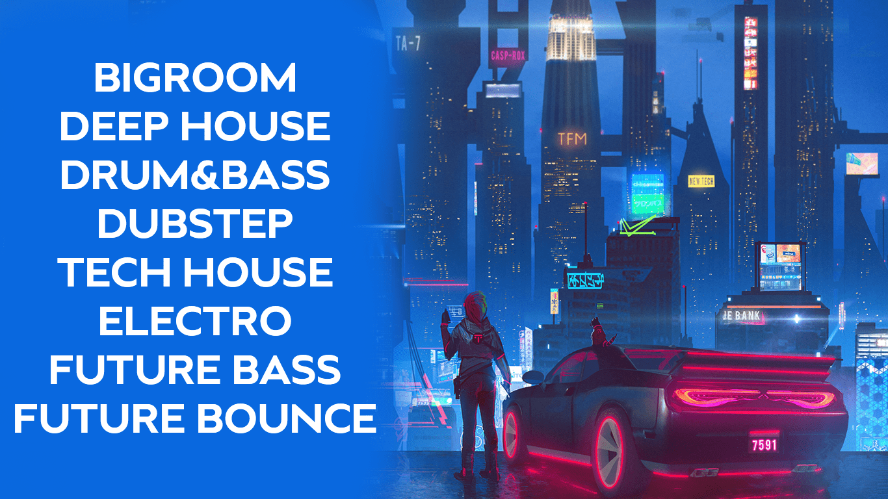

Якщо ви знаходитеся на цьому сайті - значить ви любитель електро музики і вам потрібно знайти лаконічну інформацію про цей жанр.
На мому сайті ви можете знайти інформацію про 8 жанрів електро - їх ви можете побачити на арті нижче))). Також для вашої зручності я обрав відбірні канали з музикою (знайти їх можна на вкладці Збірники), також на сайті є дуже коротка інформація про виконавців та посилання на них. Ще ви можете знайти деякі цікаві факти на вкладці Цікаве. Що ж приємного читання))).
